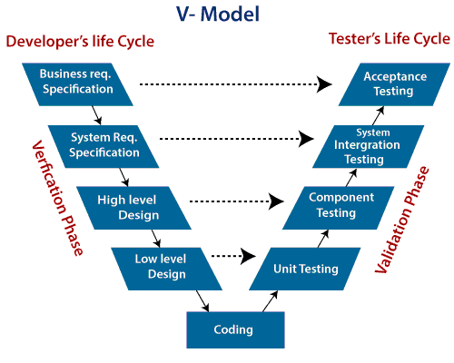

What is the V-Model?
The V-model is a type of SDLC model where the process executes in a sequential manner in a V-shape. It is also known as the Verification and Validation model. It is based on the association of a testing phase for each corresponding development stage. The development of each step is directly associated with the testing phase. The next phase starts only after completion of the previous phase i.e., for each development activity, there is a testing activity corresponding to it.
Phases in V-Model
- Verification Phase
- Validation Phase
Verification Phase
It involves a static analysis method (review) done without executing code. It is the process of evaluation of the product development process to find whether specified requirements meet.
- Business requirement analysis: The product requirements understood from the customer's side. This phase contains detailed communication to understand customer's expectations and exact requirements.
- System Design: In this stage system engineers analyze and interpret the business of the proposed system by studying the user requirements document.
- Architecture Design: The baseline in selecting the architecture is that it should understand all which typically consists of the list of modules, brief functionality of each module, their interface relationships, dependencies, database tables, architecture diagrams, technology detail, etc. The integration testing model is carried out in a particular phase.
- Module Design: In the module design phase, the system breaks down into small modules. The detailed design of the modules is specified, which is known as Low-Level Design.
- Coding Phase: After designing, the coding phase is started. Based on the requirements, a suitable programming language is decided. There are some guidelines and standards for coding. Before checking in the repository, the final build is optimized for better performance, and the code goes through many code reviews to check the performance.
Validation Phase
- Unit Testing: In the V-Model, Unit Test Plans (UTPs) are developed during the module design phase. These UTPs are executed to eliminate errors at code level or unit level. A unit is the smallest entity which can independently exist, e.g., a program module. Unit testing verifies that the smallest entity can function correctly when isolated from the rest of the codes/ units.
- Integration Testing: Integration Test Plans are developed during the Architectural Design Phase. These tests verify that groups created and tested independently can coexist and communicate among themselves.
- System Testing: System Tests Plans are developed during System Design Phase. Unlike Unit and Integration Test Plans, System Tests Plans are composed by the client?s business team. System Test ensures that expectations from an application developer are met.
- Acceptance Testing: Acceptance testing is related to the business requirement analysis part. It includes testing the software product in user atmosphere. Acceptance tests reveal the compatibility problems with the different systems, which is available within the user atmosphere. It conjointly discovers the non-functional problems like load and performance defects within the real user atmosphere.

Advantages of the V-Model
- Easy to Understand.
- Testing Methods like planning, test designing happens well before coding.
- This saves a lot of time. Hence a higher chance of success over the waterfall model.
- Avoids the downward flow of the defects.
- Works well for small plans where requirements are easily understood.
Disadvantages of the V-Model
- Very rigid and least flexible.
- Not a good for a complex project.
- Software is developed during the implementation stage, so no early prototypes of the software are produced.
- If any changes happen in the midway, then the test documents along with the required documents, has to be updated.
Example of V-Model
example of the V-Model applied to developing a mobile banking application:
- Requirements Analysis:Gather requirements for the banking app, including account management, funds transfer, bill payment, and account balance inquiry.
- System Design:Create the system architecture detailing database structure, user interface wireframes, and system components like authentication and transaction processing.
- SubSystem Design:
- Design account management subsystem: User registration, login, and profile management.
- Design funds transfer subsystem:Interface for transferring funds between accounts.
- Design bill payment subsystem: Functionality for paying bills to registered payees.
- Design balance inquiry subsystem: Interface for checking account balances.
- Implementation:Develop the banking app according to the design specifications, coding features like user registration, funds transfer, bill payment, and account balance inquiry.
- Unit Testing:Test individual components such as user registration, funds transfer, and balance inquiry to ensure they function correctly in isolation.
- Integration TestingTest individual components such as user registration, funds transfer, and balance inquiry to ensure they function correctly in isolation.
- System Testing:Test the complete mobile banking app to ensure it meets functional requirements, performs well under various conditions, and provides a smooth user experience.
- Acceptance Testing:Stakeholders review the app against predefined criteria to ensure it meets their needs and expectations, signing off on its readiness for deployment.